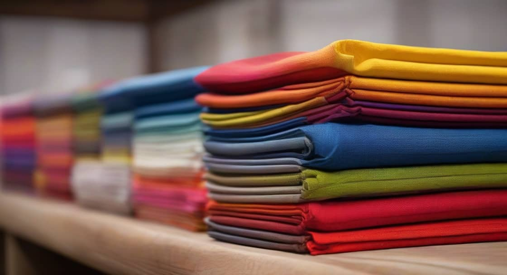
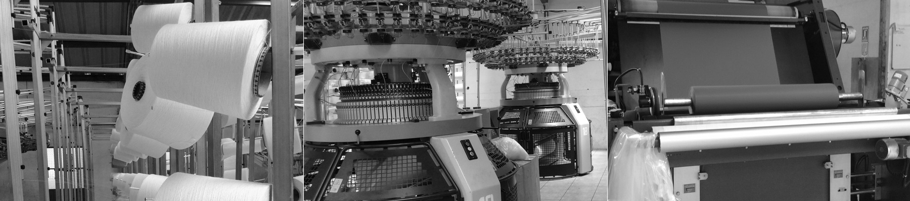

Sobre Nosotros
Empresa fundada el 19 de dicimbre de 2020 en la ciudad de Quito por Cistian Acalo, Erick Andrade y Denilson Cachiguango cuidadanos ecuatorianos nacidos en el país hace mas de 20 años, con una amplia experiencia en el ramo textil. La empresa actualmente cuenta con un recurso humano aproximado de 200 empleados, distribuidos en áreas administrativas y productivas, quienes con su colaboración nos han ayudado a mantenernos en el mercado por más de 3 años. |
La mejor Maquinaria
|  | |
|
|